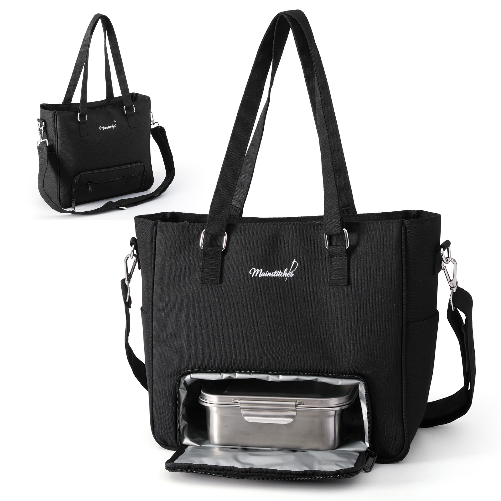

About Mainstitches
Designed around real life.
Mainstitches brings everyday function and understated style together. Our tote is made for the transitions between work, lunch, errands, and wherever the day takes you.
Shop the tote on Amazon ↗Meet the black everyday tote that keeps your essentials organized, with a separate hidden insulated compartment for lunch.
Shop on Amazon ↗
Clean, versatile design with practical storage for the things you carry every day.
Approximate exterior dimensions.
Mainstitches brings everyday function and understated style together. Our tote is made for the transitions between work, lunch, errands, and wherever the day takes you.
Shop the tote on Amazon ↗